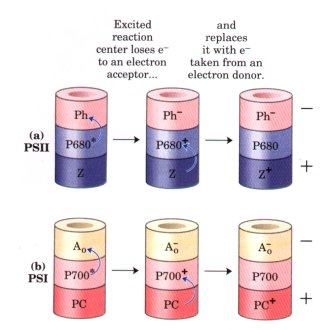
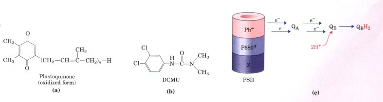
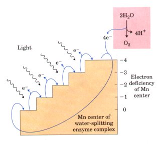
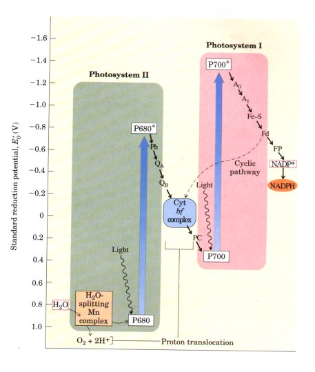
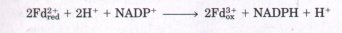
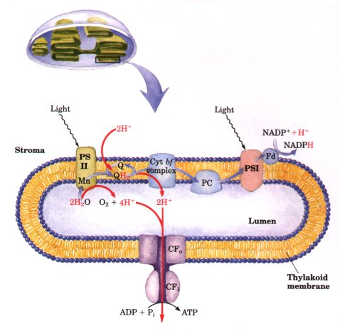

Light-Driven Electron Flow
Thylakoid membranes have two different kinds of photosystems,
each with its own type of photochemical reaction center and a set
of antenna molecules. The two systems have distinct and
complementary functions. Photosystem I has a reaction center
designated P700 and a high ratio of chlorophyll a to chlorophyll
b. Photosystem II, with its reaction center P680, contains
roughly equal amounts of chlorophyll a and b and may also contain
a third type, chlorophyll c. The thylakoid membranes of a single
spinach chloroplast have many hundreds of each kind of
photosystem. All O2-evolving photosynthetic cells-those of higher
plants, algae, and cyanobacteria-contain both photosystems I and
II; all other species of photosynthetic bacteria, which do not
evolve O2, contain only photosystem I.
It is between photosystems I and II that light-driven electron
flow occurs, producing NADPH and a transmembrane proton gradient.
Light Absorption by Photosystem II Initiates Charge
Separation
| How can light energy captured by
chloroplasts induce electrons to flow energetically
"uphill"? Excitation briefly creates a chemical
species of very low standard reduction potential-an
excellent electron donor. Excited P680, designated P680*,
within picoseconds transfers an electron to pheophytin
(a chlorophyll-like accessory pigment lacking Mg2+),
giving it a negative charge (designated Ph- ) (Fig.
18-41a). With the loss of its electron, P680* is
transformed into a radical cation, designated P680+. Thus
excitation, in creating Ph- and P680* , causes charge
separation. Ph- very rapidly passes its extra electron to
a protein-bound plastoquinone, QA, which
in turn passes its electron to another, more loosely
bound quinone, QB (Fig. 18-42; see also Fig. 1844). When
QB has acquired two electrons in two such transfers from
QA and two protons from the solvent water, it is in its
fully reduced quinol form, QBH2. This molecule
dissociates from its protein and diffuses away from the
photochemical reaction center, carrying in its chemical
bonds some of the energy of the photons that originally
excited P680. The overall reaction initiated by light in
photosystem II is therefore 4 P680 + 4H+ + 2QB + light
(4 photons)  4 P680+ + 2QBH2 ........... (18-4) 4 P680+ + 2QBH2 ........... (18-4)
|
 Figure
18-41 Photochemical events
following excitation of photosystems by light absorption.
(The steps shown here are equivalent to steps 4 and 5 in
Fig. 18-40.) (a) Photosystem II (PSII). Z represents a
Tyr residue in the D1 protein of PSII; Ph, pheophytin.
(b) Photosystem I (PSI). A0 is a chlorophyll molecule
near the reaction center of PSI; it accepts an electron
from P700 to become the powerful reducing agent A0-, .
PC, plastocyanin.
|

Figure 18-42 (a) Plastoquinone
(QA). (b) The herbicide DCMU (3-(3,4-dichlorophenyl)-1,
1-dimethylurea ) , which displaces QB from its binding site in
photosystem II and blocks electron transfer from photosystem II
to photosystem I. (c) The role of QA and QB in transferring electrons away
from photosystem II. QBH2 carries some of the energy of light
absorbed by PSII.
Eventually, the electrons in QBH2 are transferred through a
chain of membrane-bound carriers to NADP+, reducing it to NADPH
and releasing H+ (as described later). The potent herbicide DCMU
(Fig. 1842) competes with QB for the QB binding site in
photosystem II, thus blocking photosynthetic electron transfer
(Table 18-4).
In the meantime, P680+ must acquire an electron to return to
its ground state in preparation for the capture of another photon
of energy (Fig. 18-41a). In principle, the required electron
might come from any number of organic or inorganic compounds.
Photosynthetic bacteria can use a variety of electron donors for
this purpose-acetate, succinate, malate, or sulfide-depending on
what is available in a particular ecological niche. About 3
billion years ago, evolution of primitive photosynthetic bacteria
(the progenitors of the modern cyanobacteria) produced a
photosystem capable of taking electrons from a donor that is
always available-water. In this process two water molecules are
split, yielding four electrons, four protons, and molecular
oxygen: 2H2O 4H+ + 4e- + O2. A single photon of visible light
does not possess enough energy to break the bonds in water; four
photons are required in this photolytic cleavage reaction.
The four electrons abstracted from water do not pass directly
to P680+, which can only accept one electron at a time. Instead,
a remarkable molecular device, the water-splitting
complex, passes four electrons one at a time to P680+.
The immediate electron donor to P680+ is a Tyr residue (often
represented by the symbol Z) in protein D1 of the photosystem II
reaction center:

This Tyr residue regains its missing electron by oxidizing a
cluster of four manganese ions in the water-splitting complex.
With each singleelectron transfer, this Mn cluster becomes more
oxidized; four singleelectron transfers, each corresponding to
the absorption of one photon, produce a charge of +4 on the Mn
complex (Fig. 18-43):

In this state, the Mn complex can take four electrons from a
pair of water molecules, releasing 4H+ and 02:
[Mn complex]4+ + 2 H2O [Mn complex]0 +
4H+ + O2
The sum of Equations 18-4 through 18-7 is

The water-splitting activity is an integral part of the
photosystem II reaction center, and it has proved exceptionally
difficult to purify. The detailed structure of the Mn cluster is
not yet known. Manganese can exist in stable oxidation states
from +2 to +7, so a cluster of four Mn ions can certainly donate
or accept four electrons; the chemical details of this process,
however, remain to be clarified.
| Figure 18-43 The four-step process that produces
a four-electron oxidizing agent, believed to be a
complex of several Mn ions, in the water-splitting
complex of photosystem II. The sequential absorption of four photons, each causing the loss of one
electron from the Mn center, produces an oxidizing
agent that can take four electrons from two molecules
of water, producing O2. The electrons lost
from the Mn center pass one at a time to a Tyr residue (Z+) in a reaction-center protein. |
 |
Light Absorption by Photosystem I Creates a Powerful
fteducing Agent
The photochemical events that follow excitation of photosystem
I (P700) are formally similar to those in photosystem II
(following the general scheme of Figure 18-40). Light is first
captured by any one of about 200 chlorophyll a and b molecules,
or additional accessory pigments, that serve as antennae, and the
absorbed energy moves to P700 by resonance energy transfer. The
excited reaction center P700* loses an electron to an acceptor,
Ao (believed to be a special form of chlorophyll, functionally
analogous to the pheophytin of photosystem II), creating Ao and
P700+ (Fig. 18-41b); again, excitation has resulted in charge
separation at the photochemical reaction center. P700+ is a
strong oxidizing agent, which quickly acquires an electron from
plastocyanin, a soluble Cu-containing electron transfer
protein.
A0- is an exceptionally strong reducing agent, which passes its
electron through a chain of carriers that leads to NADP+ (Fig.
18-44). First, phylloquinone (A1) accepts an
electron from A0 and passes it on to an iron-sulfur protein. From
here, the electron moves to ferredoxin (Fd),
another iron-sulfur protein loosely associated with the thylakoid
membrane. Spinach ferredoxin (Mr 10,700), which has been isolated
and crystallized, contains a 2Fe-2S center (Fig. 18-5). The Fe
atoms of ferredoxin transfer electrons via one-electron Fe2+ to
Fe3+ valence changes.
| Figure 18-44 The integration of photosystems I and II. This
"Z scheme" shows the pathway of electron
transfer from H2O (lower left) to NADP+ (upper right) in
noncyclic photosynthesis. The position on the vertical
scale of each electron carrier reflects its standard
reduction potential. To raise the energy of electrons
derived from H2O to the energy level required to reduce
NADP+ to NADPH, each electron must be "lifted"
twice (heavy arrows) by photons absorbed in photosystems
I and II. One photon is required per electron boosted in
each photosystem. After each excitation, the high-energy
electrons flow "downhill" via the carrier
chains shown. Protons move across the thylakoid membrane
during the water-splitting reaction and during electron
transfer through the cytochrome bf complex, producing the
proton gradient that is central to ATP formation. The
dashed arrow is the path of cyclic electron transfer, in
which only photosystem I is involved; electrons return
via the cyclic pathway to photosystem I, instead of
reducing NADP+ to NADPH. Ph, pheophytin; QA,
plastoquinone; QR, a second quinone; PC, plastocyanin; A0
electron acceptor chlorophyll; A1, phylloquinone; Fd,
ferredoxin; FP, ferredoxin-NADP+ oxidoreductase. |
 |
The fourth electron carrier in the chain is a flavoprotein
called ferredoxin-NADP+ oxidoreductase. It
transfers electrons from reduced ferredoxin (Fd2+red) to NADP+,
reducing the latter to NADPH:

Photosystems I and II Cooperate to Carry Electrons from H2O
to NADP+
Early studies by Robert Emerson established that maximum rates
of photosynthesis, measured as O2 evolution, required light of at
least two wavelengths, now known to excite photosystems I and II.
The two photosystems must function together in the O2-evolving
light reactions of photosynthesis. The diagram in Figure 18-44,
often called the Z scheme because of its overall
form, outlines the pathway of electron flow between the two
photosystems as well as the energy relationships in the light
reactions.
When photons are absorbed by photosystem I, electrons are
expelled from the reaction center and flow down a chain of
electron carriers to NADP+ to reduce it to NADPH. P700+,
transiently electrondeficient, accepts an electron expelled by
illumination of photosystem II, which arrives via a second
connecting chain of electron carriers. This leaves an
"electron hole" in photosystem II, which is filled by
electrons from H2O. We have described how water is split to
yield: (1) electrons, which are donated to the electron-deficient
photosystem II; (2) H+ ions (protons), which are released inside
the thylakoid lumen; and (3) O2, which is released into the gas
phase. The Z scheme thus describes the complete route by which
electrons flow from H2O to NADP+ according to the equation
2H2O
+ 2 NADP+ + 8 photons O2 + 2NADPH + 2H+
For each electron transferred from H2O to NADP+, two photons
are absorbed, one by each photosystem. To form one molecule of
O2, which requires transfer of four electrons from two H2O to two
NADP+, a total of eight photons must be absorbed, four by each
photosystem.
The Cytochrome bf Complex Links Photosystems II and I
Electrons stored in QBH2 as a result of the excitation of P680
in photosystem II (Fig. 18-42c) are carried to P700 of
photosystem I via an assembly of several integral membrane
proteins known as the cytochrome bf
complex and the soluble protein plastocyanin (Fig.
18-44). The purified cytochrome bf complex contains a
b-type cytochrome with two heme groups (cytochrome b563), an
iron-sulfur protein (Mr 20,000), and cytochrome f (named for the
Latin frons, meaning "leaf"), also called cytochrome
c552?Electrons flow through the cytochrome bf complex from QBH2
to cytochrome f; the detailed path is uncertain. Cytochrome f
passes its electron to plastocyanin, the donor for P700 reduction
(Figs. 18-41b, 18-44).
The cytochrome bf complex of plants is remarkably similar to
the cytochrome bc1 complex (Complex III) of the mitochondrial
electron transfer chain, and it carries out a similar function.
Both complexes convey electrons from a reduced quinone, a mobile,
lipid-soluble carrier of two electrons (UQ in mitochondria, QB in
chloroplasts), to a watersoluble protein that carries one
electron (cytochrome c in mitochondria, plastocyanin in
chloroplasts). As in mitochondria, the function of this complex
involves a Q cycle (see Fig. 18-10) in which electrons pass from
QBH2 to cytochrome b one at a time. As in the mitochondrial
Complex III, this cycle results in the pumping of protons across
the membrane; in chloroplasts, the direction of proton movement
is from the stromal compartment to the thylakoid lumen. The
result is the production of a proton gradient across the
thylakoid membrane as electrons pass from photosystem II to
photosystem I (Fig. 18-45). Because the volume of the flattened
thylakoid lumen is small, the influx of a small number of protons
has a relatively large effect on lumenal pH. The measured
difference in pH between the stroma (pH 8) and the thylakoid
lumen (pH 4.5) represents a 3,000-fold difference in proton
concentration-a powerful driving force for ATP synthesis.

|
Figure 18-45 Proton
and electron circuits in chloroplast thylakoids.
Electrons (blue arrows) move from H2O through photosystem
II, the intermediate chain of carriers, photosystem I,
and finally to NADP+. Protons (red arrows) are pumped
into the thylakoid lumen by the flow of electrons through
the chain of carriers between photosystem II and
photosystem I, and reenter the stroma through proton
channels formed by the F0 portion of the ATP synthase,
designated CF0 in the chloroplast enzyme. The Fl subunit
(CF1) catalyzes synthesis of ATP.
|